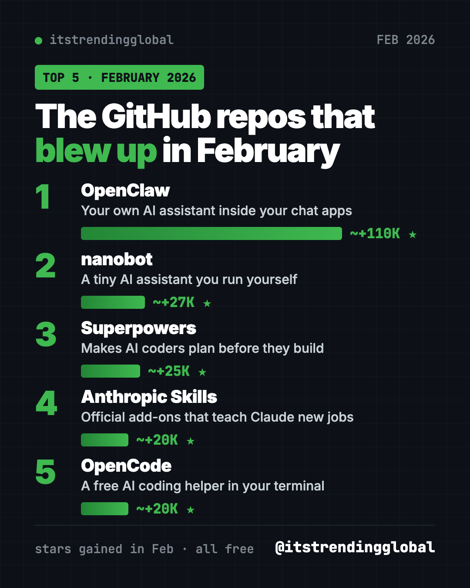
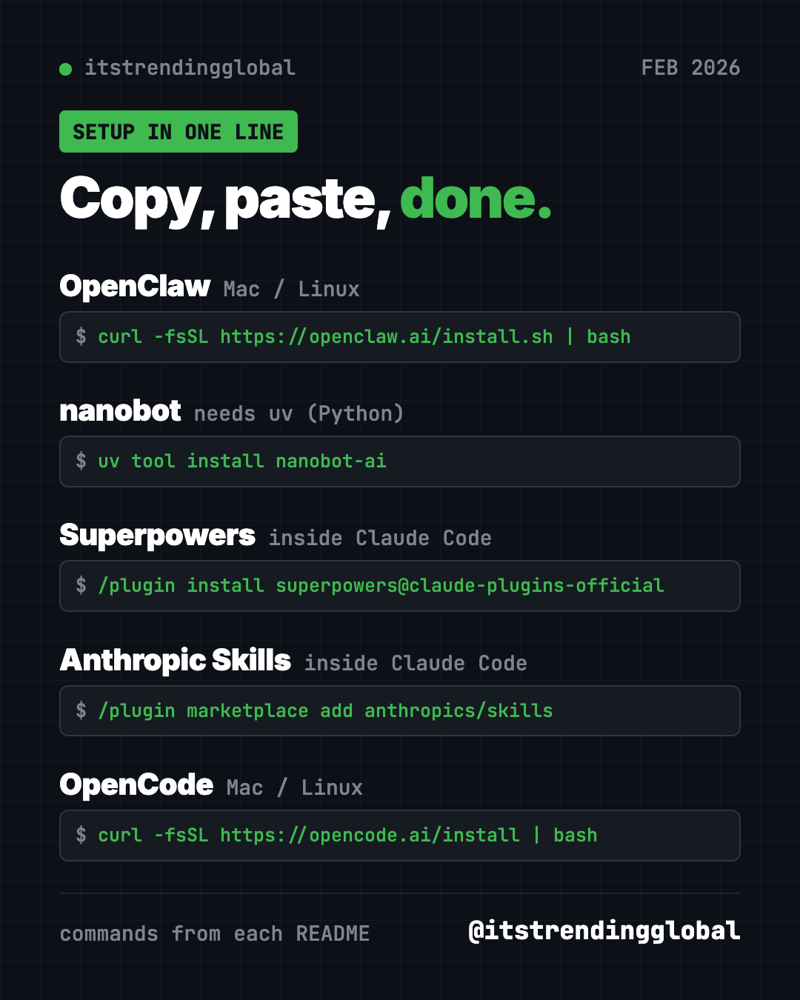
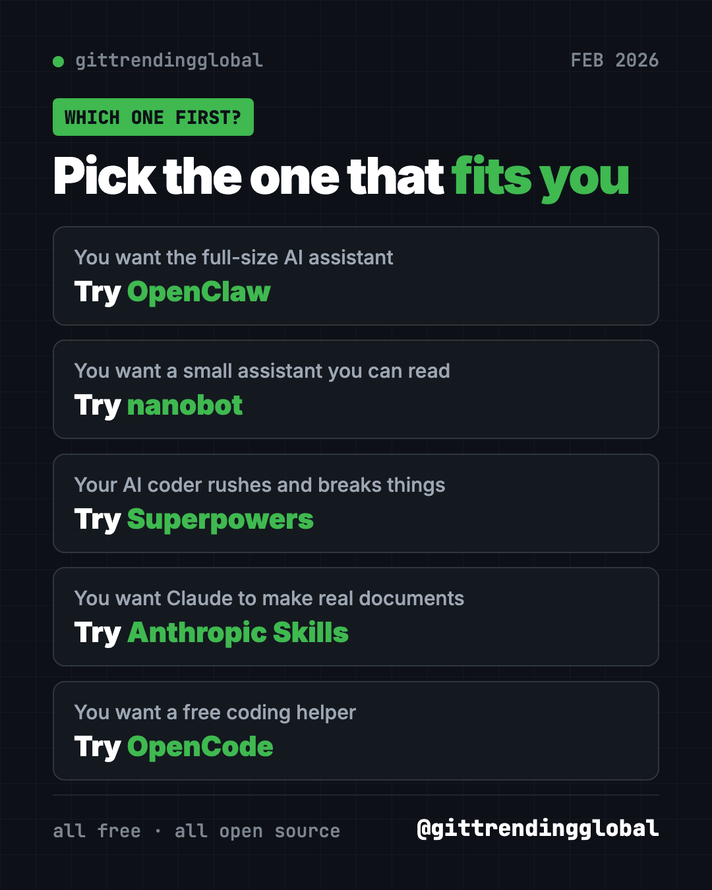

Best GitHub Repos of February 2026 (Free AI Tools)
- Top repos
- Published 2026-10-15
- 10 min read
- Updated 2026-10-16
- By the It's Trending Global team
The best GitHub repos February 2026 brought: OpenClaw, nanobot, Superpowers, Anthropic's Skills and OpenCode. Five free AI tools, explained in plain words.
The best GitHub repos February 2026 had to offer were OpenClaw, nanobot, Superpowers, Anthropic's Skills and OpenCode. Four of them were January hits that kept growing. The new face was nanobot, a tiny AI assistant you can run and own yourself.
Quick refresher: a GitHub star is like a bookmark. Lots of stars in one month means lots of people want the thing. For each repo you get plain-English uses, the real setup command from its README, and a prompt you can paste into an AI helper to do the setup for you.
Key takeaways
- OpenClaw stayed on top in February 2026, with about 110,000 new stars. It is an AI assistant that works inside your chat apps.
- nanobot was the newcomer. It is a small, self-hosted AI assistant you open in your browser.
- Superpowers kept climbing. It teaches AI coding helpers to plan before they build.
- Anthropic's Skills gives Claude ready-made skills for Word, PDF, PowerPoint and Excel files.
- OpenCode remained a popular free AI coding helper for the terminal.

The 5 trending GitHub repos of February 2026 at a glance
| Repo | What it does | Who it's for | Free? | Works on |
|---|---|---|---|---|
| OpenClaw | AI assistant inside WhatsApp, Telegram, Slack and more | Anyone who wants AI to do tasks | Yes (MIT), AI model may cost | Mac, Windows, Linux, phone apps |
| nanobot | Small AI assistant with a browser page | People who want a simple, own-it assistant | Yes (MIT), AI model may cost | Mac, Windows, Linux |
| Superpowers | A plan-first routine for AI coders | Anyone using an AI coding helper | Yes (MIT) | Claude Code, Codex and more |
| Anthropic's Skills | Official skills for Claude | Claude users | Yes to use, mixed licenses | Claude Code, Claude.ai, API |
| OpenCode | AI coding helper in the terminal | Builders and students | Yes (MIT), AI model may cost | Mac, Windows, Linux |
Star gains are rough February 2026 numbers. Total star counts below were checked on GitHub on October 16, 2026.
💡 Tip: The "terminal" is a plain text window for typing commands. On a Mac it is the app called Terminal. On Windows, use PowerShell. Paste a line, press Enter, wait for it to finish.
1. OpenClaw: still the biggest name on GitHub
Stars: about +110K in February · about 392K total
What it is: OpenClaw is a free AI assistant that runs on your own computer and chats with you where you already are. That includes WhatsApp, Telegram, Slack, Discord, iMessage, Teams and 20+ more. It can take real actions, not just answer questions. It is run by the OpenClaw Foundation, a nonprofit, and has no paid plan of its own.
Who it's for: People who want one assistant across all their chat apps. Small teams who want to share one in Slack.
How you'd use it:
- Send a voice note or text from your phone and let it handle a task on your computer.
- Have it keep notes and remember your preferences over time.
- Try different AI brains, like Claude or a local model, without changing anything else.
Install it: Copy and paste this (Mac, Linux, or WSL2 on Windows):
curl -fsSL https://openclaw.ai/install.sh | bash
On Windows, paste this into PowerShell:
iwr -useb https://openclaw.ai/install.ps1 | iex
Follow the wizard that opens. Afterwards, check it is running:
openclaw gateway status
openclaw dashboard
Or let Claude or Codex do it: Claude Code and OpenAI Codex are AI helpers that can run setup for you. Paste this into one of them:
Set up OpenClaw from https://github.com/openclaw/openclaw on this computer
with its official installer. Explain each onboarding question in plain words
before I answer. Then open the dashboard and help me send a test message.
See OpenClaw on GitHub · Read our full OpenClaw guide
2. nanobot: a tiny AI assistant you run yourself
Stars: about +27K in February · about 49K total
What it is: nanobot is a small, open-source AI assistant written in Python. "Self-hosted" means it runs on a computer you control. You can use it in a browser page, in the terminal, or from chat apps like Telegram, Discord, Slack, WeChat and email. It can read PDF, Word, Excel and PowerPoint files, remember your preferences, and run scheduled tasks. You bring your own AI model, from a paid provider or one running on your own machine.
Who it's for: People who want an assistant they fully own. Also learners, since the core is small enough to read.
How you'd use it:
- Drop a long report in a folder and ask for a one-page summary.
- Set a daily reminder or a weekly check-in that runs on its own.
- Chat with it from Telegram, limited to your own account.
Install it: You need Python 3.11 or newer. On Mac or Linux, copy and paste this:
curl -fsSL https://raw.githubusercontent.com/HKUDS/nanobot/main/scripts/install.sh | sh
On Windows, paste this into PowerShell:
irm https://raw.githubusercontent.com/HKUDS/nanobot/main/scripts/install.ps1 | iex
On a normal desktop, the installer opens the browser page. If not, run nanobot webui. Go to Settings → Models, add your model, then send "Hello!" to test it.
Or let Claude or Codex do it:
Install nanobot from https://github.com/HKUDS/nanobot using the recommended
installer in its README. Check my Python version first. Then open the WebUI,
help me add a model under Settings, and run one test message.
⚠️ Heads up: nanobot does not come with an AI model account. Model fees depend on the service you pick. A local model is free to run but needs a strong computer.
See nanobot on GitHub · Read our full nanobot guide

3. Superpowers: a plan-first routine for AI coders
Stars: about +25K in February · about 300K total
What it is: Superpowers is a free skill pack and work method for AI coding helpers. It makes the AI slow down. First it asks what you are trying to do. Then it shows you a design in short, readable chunks. Then it writes a step-by-step plan and works through it, checking and testing as it goes. The skills kick in on their own, so you don't have to remember any commands.
Who it's for: Anyone who has watched an AI coder confidently build the wrong thing.
How you'd use it:
- Turn a vague idea, like "a page for my bake sale," into a clear plan first.
- Have it test each piece before it moves on.
- Use it with more than one helper. The README covers Claude Code, Codex, Cursor, Gemini CLI, OpenCode and more.
Install it: Inside Claude Code, copy and paste this:
/plugin install superpowers@claude-plugins-official
If you use more than one AI helper, the README says to install it separately in each one.
Or let Claude or Codex do it:
Install Superpowers from https://github.com/obra/superpowers for my AI coding
tool, following its README. Then use it to plan a small recipe website with me.
Ask me questions first and show me the plan before writing code.
See Superpowers on GitHub · Read our full Superpowers guide
4. Anthropic's Skills: let Claude make real documents
Stars: about +20K in February · about 181K total
What it is: These are Anthropic's official example skills for Claude. Each skill is a folder with instructions that Claude follows for one kind of job. The repo includes the skills behind Claude's document features for Word, PDF, PowerPoint and Excel. It also has creative and technical examples, plus a template to write your own.
Who it's for: Claude users who want better files, and anyone who wants to build a custom skill.
How you'd use it:
- Turn meeting notes into a formatted Word document.
- Clean up a spreadsheet and add a summary tab.
- Write your own skill for a task you repeat every week.
Install it: Inside Claude Code, copy and paste this:
/plugin marketplace add anthropics/skills
/plugin install document-skills@anthropic-agent-skills
Paid Claude.ai plans already include these example skills.
Or let Claude or Codex do it: After install, ask in plain words:
Use the PDF skill to extract the form fields from path/to/some-file.pdf
💡 Tip: The document skills are source-available, not open source. You can read and learn from them, but check the license before reusing them in your own product.
See Anthropic's Skills on GitHub
5. OpenCode: an open AI coding helper
Stars: about +20K in February · about 214K total
What it is: OpenCode is a free, open-source coding agent that runs in your terminal. A desktop app is also in beta. It has a "build" mode that can edit files and a "plan" mode that only reads and suggests. Press Tab to switch.
Who it's for: Anyone who wants an AI coding helper that is open and works with different AI models.
How you'd use it:
- Ask what a confusing folder of code does, in plain English.
- Fix a small bug while Plan mode shows you each step first.
- Write a quick script to tidy up your downloads folder.
Install it: Copy and paste this on Mac or Linux:
curl -fsSL https://opencode.ai/install | bash
On Windows, the README lists scoop install opencode or choco install opencode. The desktop app is at opencode.ai/download.
Or let Claude or Codex do it:
Install OpenCode from https://github.com/anomalyco/opencode with the method
its README suggests for my computer. Then help me connect a model and try
Plan mode on one of my folders.
Which one should you try first?
- You want the full-size AI assistant: start with OpenClaw.
- You want a smaller assistant you can understand: pick nanobot.
- Your AI coder rushes: add Superpowers.
- You want Claude to make proper files: install Anthropic's Skills.
- You want a free coding helper: try OpenCode.

Catch up on the month's headlines in February 2026 in AI. You can also look back at January's best GitHub repos or jump ahead to March's list.
FAQ
What were the best GitHub repos of February 2026?
By stars gained, the top five were OpenClaw, nanobot, Superpowers, Anthropic's Skills and OpenCode. OpenClaw led again, with about 110,000 new stars.
What is the difference between OpenClaw and nanobot?
Both are personal AI assistants you run yourself. OpenClaw is the bigger project with apps and 20+ chat channels. nanobot is a smaller Python project with a browser page, built to stay simple.
Are these trending GitHub repos free?
Yes. All five are free to use. The AI model you connect, like Claude or OpenAI, may charge you per use.
Do I need to know how to code?
No. OpenClaw and nanobot have installers that guide you. For the rest, paste our prompt into Claude Code or Codex and let it do the setup.
Why did the same repos trend two months in a row?
Big projects keep pulling in new people for weeks after they first go viral. That is why OpenClaw, Superpowers, Anthropic's Skills and OpenCode showed up again after January.
Want a new free tool explained every day? Follow ITG Now on Instagram.
Keep reading

Trending GitHub Repos October 2026: The Top 5 So Far
The trending GitHub repos of October 2026 so far: a free Photoshop-style editor, an AI art studio, a big AI model for gaming PCs and more, explained.

Trending GitHub Repos This Week, Oct 5 2026: The Top 5
Trending GitHub repos this week Oct 5 2026: Matt Pocock's skills, the openGym workout tracker, e2e testing, HyperFrames video and claude-mem memory.

GitHub Trending September 28, 2026: Hindsight and Paperclip
GitHub trending September 28 2026: Hindsight, Paperclip, NVIDIA's OpenShell and a free 542-lesson AI course, with setup steps for each.